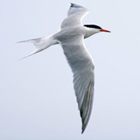

The scarlet tanager is a medium-sized American songbird. They can be found in the eastern North America forest. The scarlet tanager in the picture is a male which is blood-red with black wings and tail. A females scarlet tanager is olive-yellow with darker olive wings and tails.
